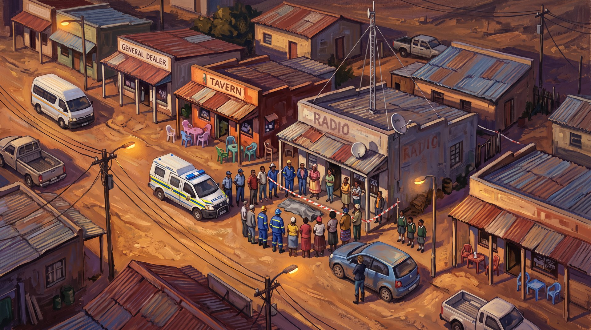
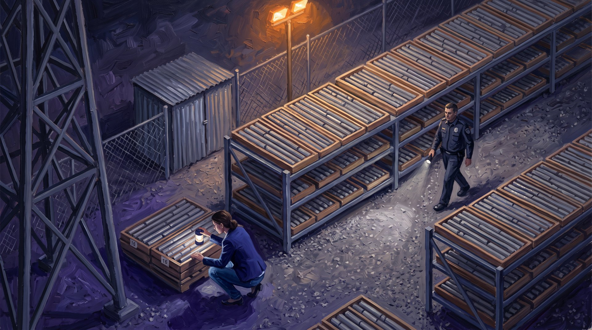
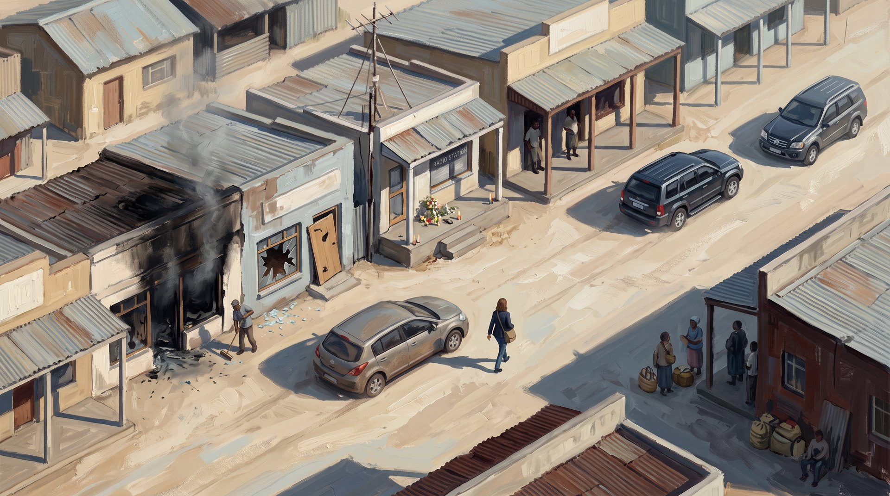
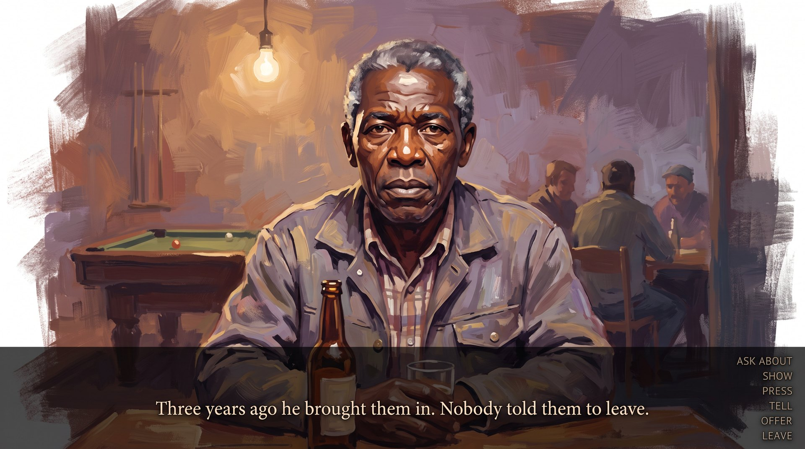
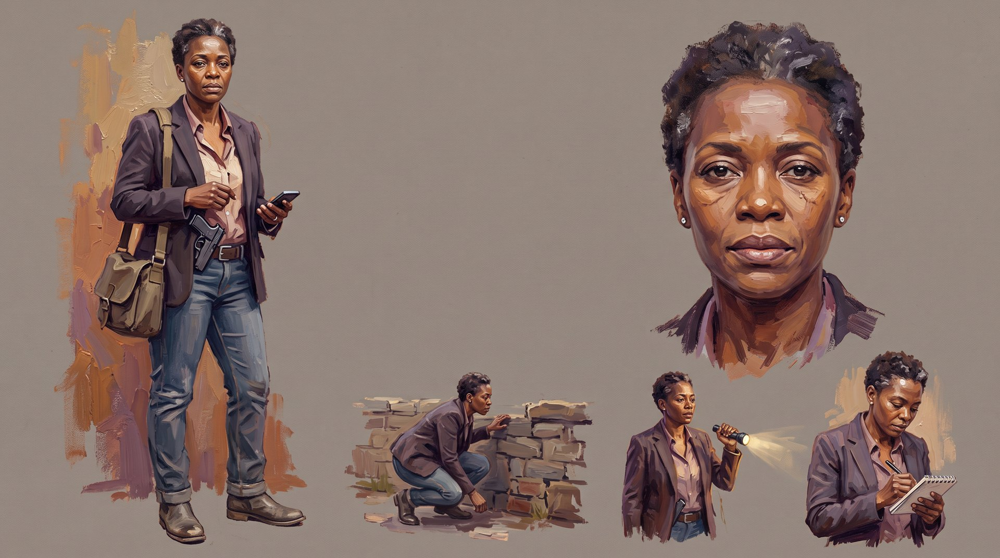
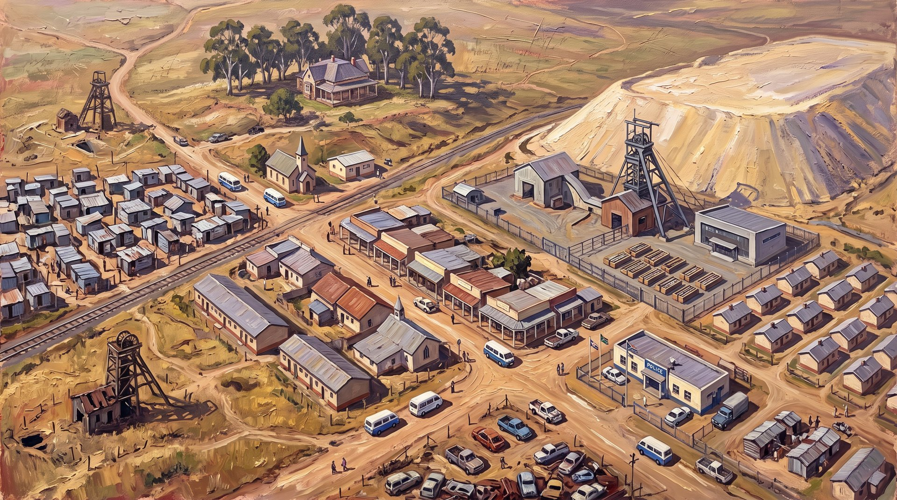
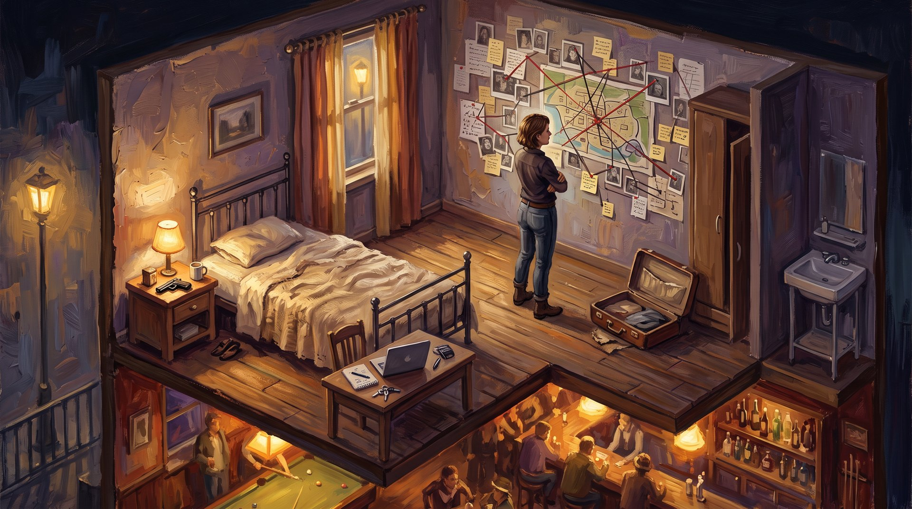

Art review 03 · oil painting · five days in a mining town
Doornrand
The first eight frames in the chosen style. Everything is painted: the town, the people, the conversation screens. Notes on what worked and what did not are under each frame, and the decisions are at the bottom.

Monday, dusk. The first thing the player sees: the crowd outside the radio station, and Ruth just out of her car. This is the gameplay camera.
The world in play
One street, three lights
A short game set in one place depends on the player seeing that place change. These are the same kind of view at dusk, at night and on the last morning.
Monday, duskReads clearly at this size: crowd, tape, van, body, Ruth. The colour is warm and saturated, close to a picture book. The corrugated roofs and verandas carry the place without any landmark.

Thursday, night: the core yardStealth works in paint. One floodlight, one torch beam, and Ruth in the violet shadow is all the information the player needs.Ruth and the guard's uniform are wrong; brushwork is smoother than the rest

Friday, morningThe epilogue. Pale, washed out, quiet. Flowers on the station step, the buyers' cars passing through, Ruth walking to her car. The tone is right.Ruth does not match her sheet
Conversations
Face to face
The player looks straight at one person, with the subtitle below and six commands at the bottom right: Ask about, Show, Press, Tell, Offer, Leave.
Hendrik Brandt, the big houseThe strongest frame of the set. The room tells you who he is: survey plan, headgear photographs, tea going cold. Dark, rich, specific.

Joseph Sithole, the tavernThe loose unfinished edges are a good device: the painting gets vaguer the further it is from the person you are talking to. His face is too generic and needs a redraw as a specific man.
Main character
Ruth Mahlangu

This is the reference. Short greying hair, blazer, jeans, boots, canvas bag; tired and watchful. Three of the scene frames drew someone else, so every frame from here on is generated with this sheet attached. The pistol should sit under the blazer, not in front of it.
The map
The whole town

Everything in the design is here and in a believable relation: main street in the middle, the working shaft and core yard against the tailings dump, the old shaft at the edge, the settlement across the railway, the big house on the ridge looking down on all of it. This can be the basis for the level layout.
Home base
The room above the tavern

The idea works: the evidence wall in a rented room, the tavern alive underneath, the pistol on the bedside table. The execution misses. The building looks like a European inn, and the woman is not Ruth.Redo
For review
What needs deciding
Which oil treatment?
The eight frames drifted between three. Warm and saturated (Monday dusk), dark and rich (Brandt), pale and dry (Friday). My recommendation: Brandt's treatment for every conversation, and for the town a version of Monday dusk with the colour pulled back, so it reads less like an illustration and more like a painting of a real place. Light then changes by day, ending in Friday's pallor.
Is Ruth right?
If the study sheet is her, it becomes the fixed reference.
Does the town look like a real place to you?
This pass took its detail from how a mining town is built. Say what looks false.
Next frames
Redo the room, the core yard and Friday with Ruth's sheet attached. Then the four powers as conversation portraits (Steyn, Mokoena, Grace Tau, Captain Khoza), Anneline in the assay lab, and tray 114 itself.